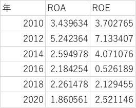
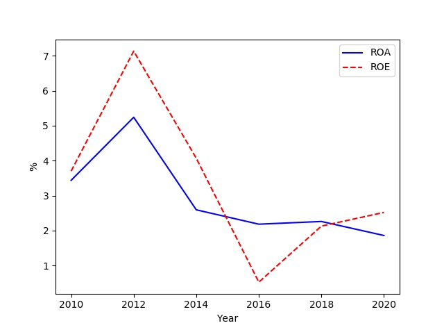

イオン企業分析 其の3
2020/5/17
イオンの企業分析を行っていきます。（3ページ目）
目次
- 1 資本収益性とは
- 2 ROA
- 3 ROE
資本収益性
資本収益性とは、資本に対する利益の割合であり、利益を上げるために どれほど効率的に資本を活用できたかを表している。今回は、総資本経常利益率(以降、ROA)と 自己資本当期利益率(以降、ROE)を扱っていく。それぞれのデータの関連性は以下に紹介
＊資本の定義は計算法によって異なる場合がある。
- 純利益＝経常利益に特別損益を含め、さらに税金を引き、そのうち親会社株主に帰属するもの
- 総資本＝負債＋純資産
- 自己資本＝純資産から非支配株主持分と新株予約権を差し引いたもの(ほとんどが株主資本)
- ROA＝経常利益÷総資本×100
- ROE＝純利益÷自己資本×100
パパっと計算すると...
グラフで表すと、下図のようになる。
ROA
この結果から、ROAに関しては、2012年以降減少していることがわかります。 ちなみに、イオンと同じ小売業のROAの平均値は4.1とされているため、効率的に総資本を運用しているとは 言えないことがわかります。
経常利益と総資本を比べてみても、総資本の上昇量に対して経常利益がそこまで伸びていないことが原因だと考えられる。
自社に投資してるが、見合った利益が得られていない？
ROE
ROEに関しては、近年は減少傾向にあることがわかります。 自己資本を見てみると、2014年までは株主からの投資が増え続け成長段階にあったのだと考えられるが、 近年は投資額が停滞している。
昔のように魅力的な企業ではない？
ならば、ROEの変化は純利益の変化が大きな原因だと考えられるのでは？ 特に、2012年と2016年を比較すると純利益とROEのそれぞれの差が大きく表れている。 小売業のROEの平均値は7％付近のため、効率的に自己資本を運用しているとは言えないことがわかります。
イオンは小売業の平均値よりもROA,ROEがそれぞれ低いが、イオンは多くの業界に参入しているため、 一概に低いとは言えないのでは？
また、ROEが低かったため、他人資本（負債）の総資産に対する割合にも注目する必要が出てきた。 つまり、負債額が大きくなり倒産しないかということを調べていく必要があると。 そこで、有効な分析手法はストック分析であり、貸借対照表（B/S)を用いる。
分析しながら不安になってきましたww
以上が、収益性分析の結果となりました。 別記事にて、貸借対照表の分析（ストック分析）を行っていきます。（ストック分析）